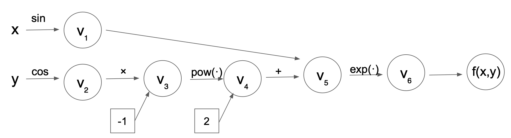

Welcome to Pomeranian’s documentation!¶
Introduction¶
The Pomeranian package allows users to calculate derivatives of complicated differential equations to machine precision! The user can choose either of forward mode differentiation or reverse mode differentiation for their calculations.
The calculation of derivatives is integral to many problems across disciplines. For instance, the calculation of derivatives is necessary for training deep neural networks (i.e., in back propogation), optimizing functions, building economic models, modeling disease spread (e.g., of COVID-19), and examining change in complex systems over time (e.g., physical systems, biological systems). Pomeranian provides a method to solve complicated differential equations being especially useful for cases where symbolic differentiation or numerical approximations are infeasible or inaccurate respectively.
Motivation for Automatic Differentiation¶
Automatic differentiation is often contrasted with other methods for calculating derivations such as the finite-difference method, which is a numerical method for approximating the solution to differential equations. The finite-difference method relies on the definition of a derivative to approximate its solution:
Of note, the finite-difference method relies on choosing the best \(\epsilon\) value, and it is unclear how to do so. Poorly-chosen \(\epsilon\) values may cause inaccurate approximations or instability of solutions (e.g., due to floating point errors).
Another potential method of finding derivatives in real-world applications is symbolic differentiation, which works directly with mathematical equations. However, there are important limitations to this method as well. Specifically, symbolic differentiation can be too computationally costly when functions become highly complex, is a very memory-intensive process, and may not always be applicable depending on the exact form of the function.
These limitations motivate the use of automatic differentiation (AD). AD is a method that is capable of evaluating the derivative of a function specified by a computer program at machine precision, which does not rely entirely on symoblic math (like symbolic differentiation) nor on evaluating the original function at sample points (like the finite-difference method). Rather, AD uses the chain rule to break complex functions into smaller pieces and evaluates only elementary operations at each step. Thus, AD is more easily applicable to a wide range of complex functions suitable for use in real-life applications.
Our package Pomeranian is a PyPI-distributed Python library to perform AD. Just as pomeranians are known for their intelligence, friendliness, and confidence in tackling challenging problems (e.g., taking on big dogs despite their small size), our package is user-friendly, powerful, and able to compute solutions to complex problems using simple/elementary operations.
Below, we describe the mathematical background and concepts underlying AD, as well as the usage, software organization, implementation, and licensing of our Pomeranian package.
Background¶
Chain rule¶
Chain rule is at the heart of automatic differentiation. It enables us to decompose complex functions into piecewise evaluation. Suppose that we have a function \(g(h(x))\). We could apply chain rule to calculate the derivative of g with respect to t:
Chain rule can also be used in a high dimensional scenario. If we have a function \(g(h(x))\) where \(h \in R^n\) and \(x \in R^m\). The derivative can be expressed as a gradient vector:
Elementary functions¶
A complex function could be broken down into elementary functions in order to evaluate them piecewise. Elementary functions is a function of a single variable that is defined as taking sums, products, roots, and other functions.
Forward mode¶
In forward mode, we evaluate the intermediate results \(v_i\) and the directional derivative at the same time.
Evaluation trace¶
The evaluation of a function involves partial ordering of the operations associated with f, forming a evaluation trace. The evaluation trace introduces intermediate results \(v_i\) that elementary functions could operate on. These intermediate results depend on independent variables.
Computational graph¶
We could visualize the evaluation trace as a computational graph, with each intermediate variable as a node and each elementary function as a edge. For example, the computational graph for \(f(x, y)=e^{sin(x)-cos(y)^2}\) looks like the graph below:
Directional derivative and seed vector¶
In the computational graph for the forward mode, each node not only carries the evaluation of intermediate variable, but also a directional derivative of the intermediate variable in a given direction \(p \in R^m\). These two operations happen simultaneously and are termed as the primal trace and the tangent trace. The directional derivative is calculated by projecting the gradient vector into the direction of the seed vector \(p\):
In other words, the forward mode AD computes the inner product of the Jacobian with the seed vector p (\(J \in R^{n \cdot m}, p \in R^m\))
which can be interpreted as projecting Jacobian in the direction given by p. The full Jacobian can be calculated in forward mode AD using \(m\) passes, where seed vectors p are set to the m-th unit vector along coordinate \(x_m\) for the m-th pass.
The evaluation trace of function \(f(x, y)=e^{sin(x)-cos(y)^2}\) at \((x,y)=(\pi/2, \pi/3)\) is as the table follows:
Trace |
Elementary Function |
Value |
Elementary Function Derivative |
\(\nabla x\) value |
\(\nabla y\) value |
|---|---|---|---|---|---|
\(x\) |
\(\pi/2\) |
\(\pi/2\) |
1 |
1 |
0 |
\(y\) |
\(\pi/3\) |
\(\pi/3\) |
1 |
0 |
1 |
\(v_1\) |
\(sin(x)\) |
0 |
\(cos(x)D_pv_1\) |
0 |
0 |
\(v_2\) |
\(cos(y)\) |
0.5 |
\(-sin(y)D_pv_2\) |
0 |
\(-\sqrt{3}/2\) |
\(v_3\) |
\(v_2^2\) |
0.25 |
\(2v_2D_pv_3\) |
0 |
\(-\sqrt{3}\) |
\(v_4\) |
\(-v_3\) |
-0.25 |
\(-D_pv_4\) |
0 |
\(\sqrt{3}\) |
\(v_5\) |
\(v_1+v_4\) |
-0.25 |
\(D_pv_1+D_pv_4\) |
0 |
\(\sqrt{3}\) |
\(v_6\) |
\(e^{v_5}\) |
\(e^{-0.25}\) |
\(e^{v_5}D_pv_5\) |
0 |
\(\sqrt{3}e^{\sqrt{3}}\) |
As observed from the table, in the forward mode AD, we are only working with elementary functions whose derivatives are known. therefore, it is trivial to calculate \(D_pv_j\)
Reverse mode¶
The table below shows some major differences between the forward and the reverse mode:
forward mode |
reverse mode |
|---|---|
|
|
Dual number¶
A dual number, similar to a complex number, has a real part and a dual part: \(z = a + b \epsilon\), where \(\epsilon\) is a high order term and we define \(\epsilon^2=0\). Dual numbers are useful to encode the primal and the tangental traces. It is a useful data structure in carrying out the forward mode of autodifferentiation, since the function evaluation and directional derivative are calcualted simultaneously in the forward mode. For example, let \(f\) and \(g\) be two functions th \(f\prime\) and \(g\prime\) being their derivatives. We construct two dual numbers:
Therefore, we have:
It can be observed that adding dual numbers together resembles the addition both for the evluation and the directional direvative parts. Similarly, the multiplication of dual numbers resemble the multiplication of the functions in the real part and the product rule of the directional derivative in the dual part. Therefore, it is a useful structure to encode the primal and the tangential traces.
Pomeranian Installation¶
The Pomeranian package is distributed via PyPI (see here for the package).
To install Pomeranian, use an installer program with the following code
pip install -i https://test.pypi.org/simple/ pomeranian
All the extra dependencies (numpy) wil also be installed.
How to use Pomeranian¶
After installation, the main forward mode, reverse mode, and elementary functions functionality can be imported using the following:
from pomeranian.forward import Forward # main forward mode module
from pomeranian.reverse import Reverse # main reverse mode module
import pomeranian.elem_func as func # elementary function module
Define Function¶
The package is flexible and can handle univariate/multivariable inputs as well as single/multiple functions at the same time. Below we provide examples of multiple different cases to allow the user to pick the format that best suits their use case.
Single variable with single function to evaluate:
f11 = lambda x: x * 2 + 5
Single variable with multiple functions to evaluate:
f12 = lambda x: [x * 2 + 5, func.sin(func.sqrt(x))]
Multivariable with single function to evaluate:
f21 = lambda x, y: func.exp(x ** 2 - y ** 2)
Multivariable with multiple functions to evaluate:
f22 = lambda x, y: [x ** 2, func.log(x + y)]
Forward Mode¶
After the function(s) has been defined using any of the formats above, set a new variable as an instance of the Forward class. The package can be used to evaluate the value of a function at a given input using the get_value() function. The derivative/Jacobian can be accessed using the forward() function. Follow the example below to use our Pomeranian package.
from pomeranian.forward import Forward
import pomeranian.elem_func as func
# univariate input, single function
ad11 = Forward(f11)
print(ad11.get_value(3.55))
>>> 12.1
print(ad11.forward(3.55))
>>> 2
# univariate input, multiple functions
ad12 = Forward(f12)
print(ad12.get_value(3.55))
>>> [12.1 0.95130689]
print(ad12.forward(3.55))
>>> [ 2. -0.08179983]
# multivariate inputs, single function
ad21 = Forward(f21)
print(ad21.get_value([3.55, -2.38]))
>>> 1030.8098145221436
print(ad21.forward([3.55, -2.38]))
>>> [7318.74968311 4906.65471713]
# multivariate inputs, multiple functions
ad22 = Forward(f22)
print(ad22.get_value([3.55, -2.38]))
>>> [12.6025 0.15700375]
print(ad22.forward([3.55, -2.38]))
>>> [[7.1 0. ]
[0.85470085 0.85470085]]
Reverse Mode¶
Reverse mode are implemented so that the input and output formats are exactly the same as forward mode. To use reverse mode, simply replace the initialized class as an instance of Reverse class, and use reverse() function to access the Jacobian. Follow the example below to use our Pomeranian package.
from pomeranian.forward import Reverse
import pomeranian.elem_func as func
# univariate input, single function
ad11 = Reverse(f11)
print(ad11.get_value(3.55))
>>> 12.1
print(ad11.reverse(3.55))
>>> 2
# univariate input, multiple functions
ad12 = Reverse(f12)
print(ad12.get_value(3.55))
>>> [12.1 0.95130689]
print(ad12.reverse(3.55))
>>> [ 2. -0.08179983]
# multivariate inputs, single function
ad21 = Reverse(f21)
print(ad21.get_value([3.55, -2.38]))
>>> 1030.8098145221436
print(ad21.reverse([3.55, -2.38]))
>>> [7318.74968311 4906.65471713]
# multivariate inputs, multiple functions
ad22 = Reverse(f22)
print(ad22.get_value([3.55, -2.38]))
>>> [12.6025 0.15700375]
print(ad22.reverse([3.55, -2.38]))
>>> [[7.1 0. ]
[0.85470085 0.85470085]]
Note that if there are multivariate inputs and multiple functions, the Jacobian matrix are displayed in the following format:
where \(n\) is the number of functions, and \(m\) is the number of inputs.
See Implementation for more information about methods, and how Multivariate Inputs and Multiple Functions are handled.
Software Organization¶
Directory structure¶
team11
├── .gitignore
├── LICENSE
├── README.md
├── requirements.txt
│
├── .github/workflows
│ ├── coverage.yml
│ └── test.yml
│
├── docs
│ ├── pictures (milestone1, milestone2 pictures)
│ ├── sphinx (final documentations)
│ ├── README.md
│ ├── milestone1.md
│ ├── milestone1.pdf
│ ├── milestone2.md
│ ├── milestone2_progress.md
│ └── ...
│
├── pomeranian
│ ├── __init__.py
│ ├── autodiff.py (AutoDiff base class)
│ ├── dual.py (Dual class)
│ ├── elem_func.py (ElementaryFunction module)
│ ├── forward.py (Forward class)
│ ├── node.py (Node class)
│ ├── reverse.py (Reverse class)
│ └── ...
│
├── tests
│ ├── run_tests.sh (script to run test)
│ ├── test_AutoDiff.py (tests for AutoDiff)
│ ├── test_Dual.py (tests for Dual)
│ ├── test_Elem.py (tests for ElementaryFunction)
│ ├── test_FM.py (tests for Forward)
│ ├── test_Node.py (tests for Node)
│ ├── test_RM.py (tests for Reverse)
│ └── ...
│
Modules¶
There are four directories in the package
pomeranian: the main package containing all the modules/classes (including
Dual,Node,Forward,Reverse, etc.) for AD; other dependencies (numpy) are also imported to facilitate structure and calculationtests: unit tests for pomeranian AD algorithms and functions
docs: additional documents and milstones for project development
.github/workflow (hidden): workflow configuration files
Test suite design¶
Test suite is included in the tests directory at the top level, which is the same level as the main package. Python built-in pytest are used to write test functions for each class separately. Github Actions is used as a CI process (in Github Enterprise) to automatically test code integration and document generation.
Distribution & Considerations¶
As mentioned above, package is distributed via PyPI. Structure of the package is designed to be modular to optimize teamwork and collaboration, and minimize chances of merge conflicts.
Implementation¶
Core Data Structures¶
Function: A single function returns the function itself, multiple functions returns a list of functions (see Define Function).
Dual: Class, for use in forward mode AD
Node: Class, for use in reverse mode AD
Intermediate values, returned values, and partial derivatives to be stored in an np.arrays
Classes¶
Dual: dual number, represent a number and the derivative of the function at the number, for use in forward mode ADNode: value, children, and associated local gradients, for use in reverse mode ADAutoDiff: base class for ADForward: implements forward mode ADReverse: implements reverse mode ADElementaryFunction(module): includes other overloaded elementary functions (e.g., trig, log, exponential, etc.) that cannot be defined inDualandNodeclass
Method and Name Attributes¶
Dualclass: for use in Forward- Attributes:
self.real: real part of dual number, to calculate value \(v_i\) of function
self.dual: dual part of dual number, to calculate value \(D_p v_i\)
- Methods:
dunder methods overloaded (e.g. __add__, __mul__, __sub__, etc.; see Implementation Example below for dunder method overloading)
Nodeclass: for use in Reverse- Attributes:
self.real: real value of function
self.partial_derivs: the children Nodes and their partial derivatives for a given Node instance in tuple format
- Methods:
dunder methods overloaded (e.g. __add__, __mul__, __sub__, etc.; see Implementation Example below for dunder method overloading)
AutoDiffbase class:- Attributes:
self.function: vector-valued input function
self.n_inputs: number of variables in function(s)
- Methods:
dunder methods overload (i.e., __repr__, __str__)
Forwardclass (inherit AutoDiff):- Attributes:
self.function: inherited from AutoDiff class
self.n_inputs: inherited from AutoDiff class
- Methods:
_dual_forward: compute value and derivatives stored in Dual
get_value: evaluate the value of function applied at input variables
forward: calculate derivative/Jacobian of formula(s) by forward mode AD
dunder methods overload (i.e., __repr__)
Reverseclass (inherit AutoDiff):- Attributes:
self.function: inherited from AutoDiff class
self.n_inputs: inherited from AutoDiff class
- Methods:
_gradiant: recursively compute derivatives at each children Nodes of root
get_value: evaluate the value of function applied at input variables
reverse: calculate derivative/Jacobian of function(s) by reverse mode AD
dunder methods overload (i.e., __repr__)
ElementaryFunctionmodule: includes other overloaded elementary functions (i.e.,sin(),cos(),tan(),exp(),sqrt(),log(),logb(),arcsin(),arccos(),arctan(),sinh(),cosh(),tanh(),logistic()) that cannot be defined inDualandNodeclass. See Implementation Example below for elementary function overloading.
Implementation Example¶
We have implemented operator overloading in Dual class as in the following example (dunder __add__ method):
def __add__(self, other):
if isinstance(other, (int, float)):
real_part = self.real + other
dual_part = self.dual
elif isinstance(other, Dual):
real_part = self.real + other.real
dual_part = self.dual + other.dual
else:
raise TypeError('Input must be type float, int, or Dual')
return Dual(real_part, dual_part)
We have implemented operator overloading in Node class as in the following example (dunder __add__ method):
def __add__(self, other):
if isinstance(other, Node):
child = Node(self.real + other.real)
self.partial_derivs.append((child, 1))
other.partial_derivs.append((child, 1))
elif isinstance(other, (int, float)):
child = Node(self.real + other)
self.partial_derivs.append((child, 1))
else:
raise TypeError('Input must be of type float, int, or Node')
return child
We have implemented elementary function overloading as in the following example (sin()):
def sin(z):
if isinstance(z, Dual):
real_part = np.sin(z.real)
dual_part = z.dual * np.cos(z.real)
return Dual(real_part, dual_part)
elif isinstance(z, Node):
child = Node(np.sin(z.real))
z.partial_derivs.append((child, np.cos(z.real)))
return child
elif isinstance(z, (int, float)):
return np.sin(z)
else:
raise TypeError('Input must be type float, int, Dual, or Node')
Multivariate Inputs and Multiple Functions¶
All multivariate inputs and functions are handled internally within Forward and Reverse class. As mentioned in the example, the user can input four different cases of function inputs, all of which share similar format.
Regarding multivariate inputs (e.g., \(\vec{x} = [x_1, x_2]\)), the user needs to specify multiple input parameters for a single function.
Regarding multiple functions (e.g., \(\vec{f} = [f_1, f_2]\)), the user need to return a single list with callable functions as the returned variable.
For example, to call the function
the user inputs the following codes:
f = lambda x1, x2: [x1 ** 2, func.exp(x1 + x2)]
When calling get_value(), forward(), and reverse() methods, the package will automatically convert all inputs to Dual (for forward mode) or Node (for reverse mode) internally and calculate the value and derivatives/Jacobian.
External Dependencies¶
Note that except for numpy, all others are python built-in packages that don’t need extra installation:
numpy: data structure, elementary functionscopy: deep copy of Nodes to avoid overwriteinspect: inspect the function source code when there are multiple functionsre: regex the source code to find the functionscollections: specifically,defaultdictis used to store and update Node and its corresponding chained gradiant calculated fromNode
Elementary Functions¶
Elementary functions are defined in the
ElementaryFunctionclass for bothDualandNodeclasses. We use existing modulesnumpydefine functions for dual/node using operator overloading.Derivatives: Derivatives are handled by the operator overloading. For forward mode, derivatives are calculated using the self.dual part of the dual number. For reverse mode, self.partial_derivs stores the children Nodes and their partial derivatives for a given Node instance.
Extension¶
We implemented Reverse Mode as the new extended feature.
As specified in Classes and Method and Name Attributes, reverse mode is implemented in Reverse class, which inherits AutoDiff base AD class. The Node class is used (similarly as Dual in forward mode) to store the real value and the children Nodes and their partial derivatives for a given Node instance in tuple format. Operator overloading is implemented in Node class, and elementary function overloading is implemented in ElementaryFunction module. Multivariate inputs and Multiple Functions are dealt with the same as Forward mode. When calling get_value() and reverse() methods, the package automatically converts all inputs to Node numbers internally and calculates the value and derivatives.
Reverse class is organized within the same directory of other main classes and modules. Reverse and Node are both tested repsectively using pytest in the test suite (see Software Organization).
Licensing¶
We license our program under an MIT License which is both simple and permissive. It allows any users to use, modify, or distribute the software without any associated liability for our team.
Broader Impact and Inclusivity Statement¶
Broader Impacts¶
A package such as pomeranian has substantial broader impacts with many potential societal benefits. However, this comes with great responsibility. The downstream applications have potential to be used in software that perpetuate social harms. For instance, existing recidivism algorithms are biased against Black defendants and social media algorithms amplify targeted misinformation; future applications of automatic differentiation software could be used to reinforce discriminatory practices.
The question of how pomeranian should be used ethnically has no simple solution. As a start, the developers and users of software should include individuals from diverse backgrounds, and assess algorithmic bias at each stage (e.g., from data collection to model development in applications). Beyond technical solutions, engineers, data scientists, and all who interact with these systems should recognize this work occurs in the context of systems built on foundations of discrimination, and work towards building a more equitable, diverse, and inclusive community.
Inclusivity¶
In principle, software development should have no barriers based on sociodemographic characteristics. In practice, biases are baked into every step of this process. From institutional and interpersonal racism that contributes to persistent underrepresentation of people of color (particularly women of color), to biases that perpetuate stereotypes about “who looks like” an engineer/scientist, our field has immense systemic inequities. Simple statements such as “we welcome everyone, regardless of background” are insufficient to address the complex causes of persistent inequities in whose voices and contributions are valued in software development.
We, the developers of pomeranian, are committed to working against systems of inequality through our research and teaching. Regarding development practices, we will advertise our software and invite contributions on a range of listservs/platforms to ensure dissemination to a broad audience. We will review and approve pull requests as a group with diverse backgrounds to carefully consider implications of new developments, and regularly seek feedback on the cultural climate of our group. In addition, we will engage in community-based outreach to foster excitement in computer science, particularly in historically underrepresented communities in STEM. We do not tolerate bias-motivated behaviors based on social group membership (e.g., race, ethnicity, gender, sexual orientation, disability, citizenship). Finally, we recognize these disparities cannot be solved by diversity initiatives at the software development stage alone, but require thoughtful and intentional restructuring of pedagogical practices at all levels (from elementary to graduate education), accompanied by activism and advocacy efforts within the broader community.